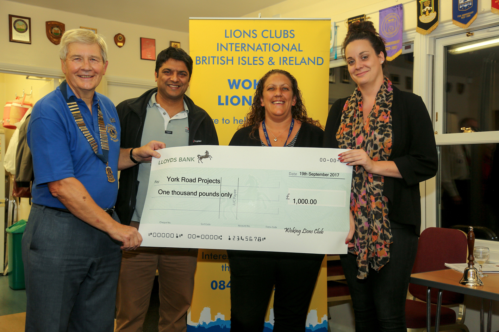
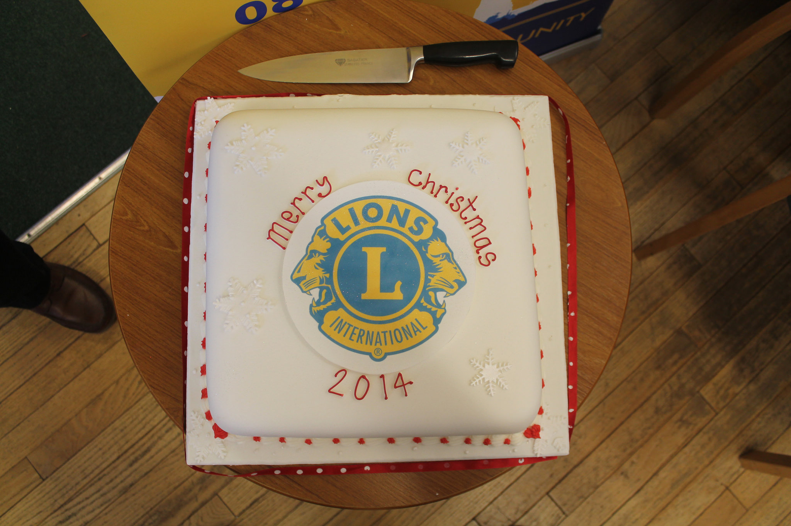

Our concert in St. Mary's Church, Horsell with the Rushmoor Male Voice Choir and four young instrumentalists raised £775. This enabled a donation of £500 to be made to LinkAble with a balance retained for other Community Welfare good causes.
The Concert on St George's day was very successful and raised over £850 of which £400 has been given to the Mayor Cllr Derek McCrum to pass on to Woking District Scouts "Handicamp" fund which provides a week's camping for disabled children every August near Farnham.
Following the successful similar event in July 2016 when with funds raised mostly through bids through rounds of golf at several local golf courses, this enabled a presentation of £1,250 to Woking and Sam Beare Hospice.
At our golf evening on the 18th of July, £1,181 was raised, which will result in a further £800 being donated to Woking and Sam Beare Hospice.
The photograph opposite shows Lion President John Cooper and Fund Raising Chairman Roger Chamberlain presenting a cheque in September 2016 to outgoing Chief Executive Nigel Harding.

On Sunday 18th June 2017, probably the hottest day of the year, 241 runners 'enjoyed' entering our fund raising fun run. This was an off road event running through beautiful woodland and open fields. All proceeds went to good causes including the York Road Project and Lions Local Community causes, with running distances of 5K, 10K and 61 runners running a half Marathon. Our sincier thanks to all who took part.
The net proceeds from the run raised almost £5,000 for the charitable causes.
A presentation evening took place on Tuesday 19th of September, with cheques of £1,000 to York Road Project, £1,000 to Woking District Scouts (towards their new campsite Birchmere), £250 to Horsell Scout Club, £250 to Woking District Guides East and £250 West.
Woking Lions were most grateful to Seymours' Horsell Office for meeting the cost of medals for all runners also gratefull to Horsell Co-op, for providing hundreds of bottles of water for the runners and to fruiterer Boz and Ali for providing bananas for the runners.


For more than 30 years Woking Lions have been garnering Harvest Festival and other goods from Churches and schools around Woking. These together with fund raising to purchase fresh food, toys and other goodies have enabled us to give out many Christmas parcels to those in need every Christmas time since the mid 1980's. For more than half this time, the co-ordination of this project has been ably led by Pat Maguire, assisted by other Lions in collating the goods and finding the names and addresses of those in need of help so that all our members can distribute them in the week leading up to Christmas.
Over the last two years, we have distributed over two hundred hampers for the first time, reaching 225 for Christmas 2016. This surely is a sad reflection on the number of families in need of help. Funds for this are raised through collections by members of our club outside major stores in November and December and by other contributions which are kindly made by a number of different sources.
For more than 30 years, Woking Lions have helped and organised an annual turkey dinner with trimmings and party at Moorcroft for more than 70 residents from accross the area, who otherwise would be on their own on Christmas Day. Together with Woking's mayor and some 25 Lions and helpers, all present have enjoyed a full meal followed by entertainment. On leaving all present have been given a goody-bag by 'our own Father Christmas'.
Over the last few years, we have been helped by generous donations from Saint Dunstan's Church, Waitrose Local Stores as well as Horsell Co-op and Boz Fruiterer, in Horsell, for both this and our Christmas hampers augmented by our collections.
This fund raising has also enabled us to donate food hampers tp Woking Council's 'Meals on Wheels' for delivery on Christmas Day.
Moorcroft has been made available for this event by Woking Council and we have benefited for the transport of residents from volunteer drivers. Particularly, we have been grateful to Woking Comunity Transport for providing buses, with volunteer drivers, to transport able and disabled guests using their Bustler buses.
